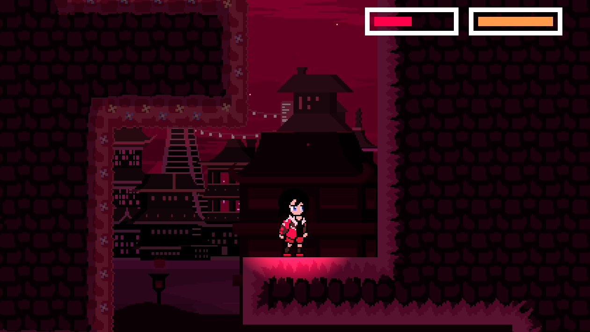
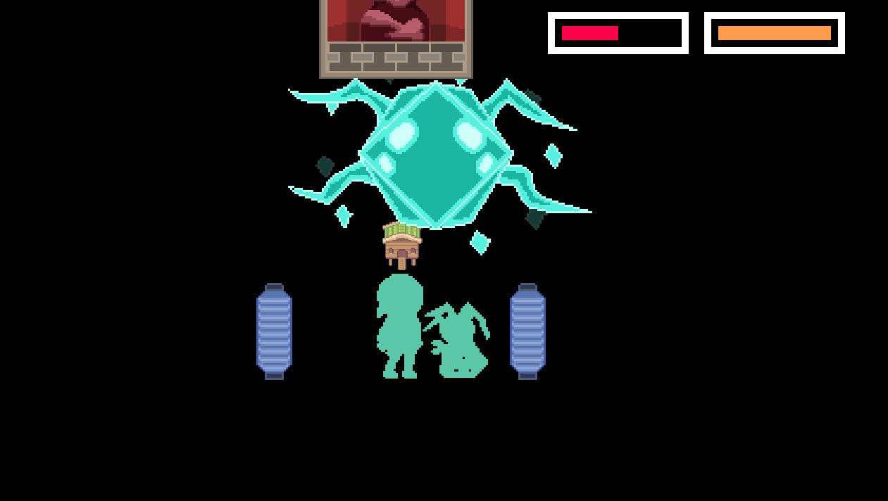

Within the Trenches
Introduction
Within the Trenches is a combat-based platformer based on the concept of Youkai. Its an extremely ambitious project my friends and I are working on.
I am the project lead of the game, resposible for overseeing the development process, coding, and the majority of pixel art.
Inspirations
I was inspired by various games, which motivated me to create this combat-based platformer to begin with.
I aim to create a game that has combat elements similar to Luna Nights, but with unique skills. I also aim to
create a narrative based story progression to the game, using visual-based storytelling similar to Hollow Knight.
Game Mechanics
The game takes root in a narrative progressive system, where the player will acquire more and more equipable
skills as they progress through the game. The game, at least in this development stage, has 4 main stages, each
with unique enemies and bosses.
The game functions as a metroidvania, where the player will have to backtrack to previous stages to access new
areas with the new skills they have acquired. For example, you are required to acquire a wall jump ability from
a character before advancing to a new area requiring this ability.
Area requiring wall jump

Obtaining wall jump ability
